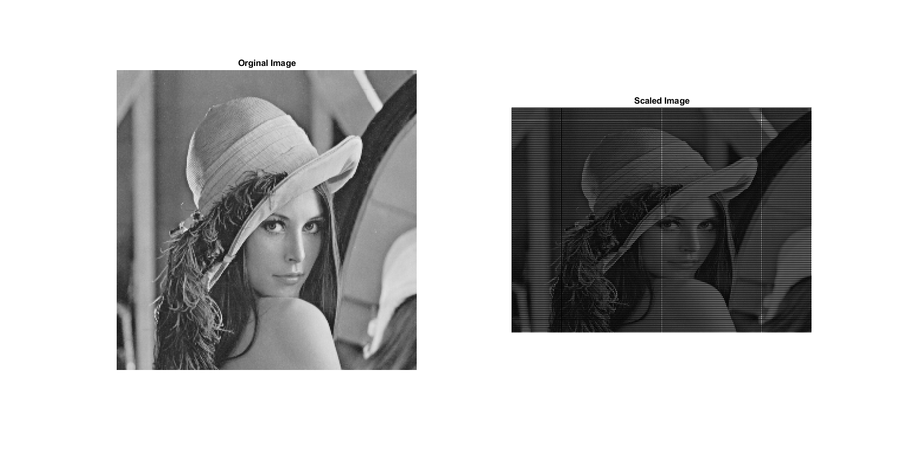

Contents
IVP Assignment 6
% Name: Chanakya Ajit Ekbote % Institute: Indian Institute of Technology Bhubaneswar % Date: 09.11.2020 % Degree: B.Tech % Branch: Electronics and Communication % Roll Number: 17EC01041
Creating a new environment.
clc; clear all; close all;
Functions Created: affine_transformation
% Function that performs an affine transformation on an image. function [img] = affine_transformation(image, T) % image: Input Image. % T: Transformation Matrix (3x3). [row, col] = size(image); % Computing the New Image Dimensions % The logic is that you traverse the entire array and get the minimum % and maximum values that the x, y of the original image can be % transformed to. Then you know the range and can compute the % dimensions of the new image accordingly. min_x = 0; max_x = 0; min_y = 0; max_y = 0; for i=1:row for j=1:col offset_mat = round([i, j, 1] * T); min_x = min(offset_mat(1), min_x); max_x = max(offset_mat(1), max_x); min_y = min(offset_mat(2), min_y); max_y = max(offset_mat(2), max_y); end end img = zeros(max_x-min_x, max_y-min_y); % Finds out if you need to add an offset if negative values are being % generated. If only positive values are being generated then there is % no need for an offset. shift_x = (1 + abs(min_x))*(min_x<0); shift_y = (1 + abs(min_y))*(min_y<0); for i=1:row for j=1:col offset_mat = round([i, j, 1] * T); img(offset_mat(1) + shift_x, offset_mat(2) + shift_y) = ... image(i, j); end end img = mat2gray(img);
Image Imports
lena = imread('C:\Chanakya\Projects\ivp-assignments\Assignment-6\images\lena_gray_256.tif');
Affine Transformations
An affine transformation is a linear transformation of the image where the image can be rotated, translated, sheared, enlarged and shrunk. All of these operations can be done via matrix multiplications. The general expression is as follows:
In the equation above, Trans is an affine transformation, u and v are the pixel positions of the original image and x and y are the pixel positions of the new image.
The general expression for affine transformations using matrices is as follows:
Note that this T can be changed depending on desire of the user. If the user would like to enlarge or shrink the image, the following transformation matrix can be used:
Note that if the constants , are above 1, we are expanding the image, and if they are less than 1 we are shrinking the image.
To rotate the image, the following Transformation Matrix can be used:
Scaling an image
% Transformation Matrix T = [1.5, 0, 0; 0, 2, 0; 0, 0, 1]; % Calling the affine_transformation function scaled_image = affine_transformation(lena, T); % Plotting the affine transformation results figure('Name', 'Image Scaling', 'units', 'normalized', ... 'outerposition', [0 0 1 1]); subplot(1, 2, 1) imshow(lena); title('Orginal Image'); subplot(1, 2, 2) imshow(scaled_image); title('Scaled Image');
Rotating the Image
% Transformation Matrix theta = 100; R = [ cosd(theta), sind(theta), 0; -sind(theta), cosd(theta), 0; 0, 0, 1]; % Calling the affine_transformation function rotated_image = affine_transformation(lena, R); % Plotting the affine transformation results figure('Name', 'Rotated Image', 'units', 'normalized', ... 'outerposition', [0 0 1 1]); subplot(1, 2, 1) imshow(lena); title('Orginal Image'); subplot(1, 2, 2) imshow(rotated_image); title('Rotated Image');
Rotating and Scaling an Image
% Calling the affine_transformation function scaled_and_rotated_image = affine_transformation(scaled_image, R); % Plotting the affine transformation results figure('Name', 'Scaling and Rotating', 'units', 'normalized', ... 'outerposition', [0 0 1 1]); subplot(1, 2, 1) imshow(lena); title('Orginal Image'); subplot(1, 2, 2) imshow(scaled_and_rotated_image); title('Scaled and Rotated Image');
Conclusion
Through this experiment, we can see that via affine transformations we can rotate, translate, shrink, enlarge and shear image via simple linear transformations. This is advantage as linear transforms are very simple and require very little computational power. These transforms are essentail when we want to compare images of of different orientations. An example of that can be comparing two satellite images of India over a span of 10 years. However, when a sattelite takes an image there is no guarantee whether the orinetation would be the same as of that of the previous image. In such circumstances we would have to change the orientation to make sure that an easy comparision is possible.